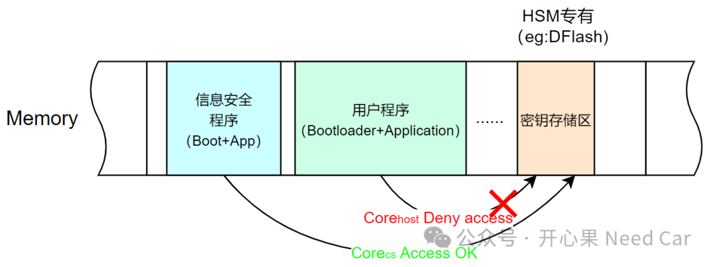

开心果 Need Car · 2024-04-15T06:49:00+08:00 · 微信原文
付费文章：当前仅保存公开试读部分，全文尚未获取。
我们讨论汽车信息安全的话题，绕不开"密钥存储"。如标题：在信息安全的开发中，如果没有专属HSM(Hardware Security Module)访问的内存区，Host也能访问，那么，密钥不就暴露了吗？
1、HSM具有专属的密钥存储区方案

可是，并不是每个芯片都有HSM专属内存区。因此，密钥可被Corehost访问，而这样会增加信息泄露的风险，怎么办呢？